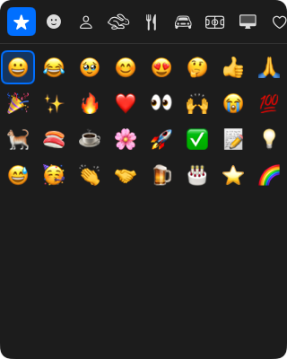

EmojiBako
ホットキーで呼び出し、日本語で検索できるmacOSの絵文字ピッカー
A macOS emoji picker you open with a hotkey and search in Japanese or English
ダウンロード（無料）Download (free)macOS 14.4以降・Apple Silicon搭載のMac
macOS 14.4 or later · Mac with Apple silicon

特長
- どこからでも呼び出せる初期設定では⌘.でピッカーが開きます。ホットキーは設定で変更できます。
- 日本語で検索できる「ねこ」「ネコ」「猫」「cat」のどれでも🐈が見つかります。変換中のひらがなでも絞り込めます。
- よく使う絵文字が先頭に使用回数の多い絵文字から並びます。
- クリップボードを元に戻す入力に使ったクリップボードは、画像やファイルも含めて元に戻します。
使い方
| 操作 | キー |
|---|---|
| ピッカーを開く・閉じる | ⌘.（設定で変更可） |
| 絵文字を選ぶ | 矢印キー |
| 選んだ絵文字を入力する | Enter |
| カテゴリを切り替える | Tab・Shift + Tab |
| 検索を始める・終える | ⌘F |
| 閉じる | Esc |
権限と通信
アクセシビリティの許可が必要です。選んだ絵文字を作業中のアプリに入力するために、⌘Vのキー操作を送るためです。初回起動時に案内が表示されます。
外部と通信するのは、GitHubで新しいバージョンを確認するときだけです（1日1回、設定でオフにできます）。解析やクラッシュレポートの送信は行いません。ソースコードはGitHubで公開しています。
Features
- Open it from anywherePress ⌘. by default. You can change the hotkey in Settings.
- Search in Japanese or English「ねこ」, 「ネコ」, 「猫」, and "cat" all find 🐈, even while you are still composing Japanese text.
- Frequently used emoji firstThe emoji you use most appear first.
- Your clipboard is restoredEverything on your clipboard, including images and files, comes back after the emoji is typed.
Usage
| Action | Key |
|---|---|
| Open or close the picker | ⌘. (configurable) |
| Move the selection | Arrow keys |
| Type the selected emoji | Enter |
| Switch category | Tab / Shift + Tab |
| Start or end search | ⌘F |
| Close | Esc |
Permissions and network access
EmojiBako needs Accessibility access to send ⌘V, which types the emoji you pick into the app you are working in. You are guided through this on first launch.
The only network access is a check for new versions on GitHub, once a day, which you can turn off in Settings. EmojiBako does not send analytics or crash reports. The source code is on GitHub.